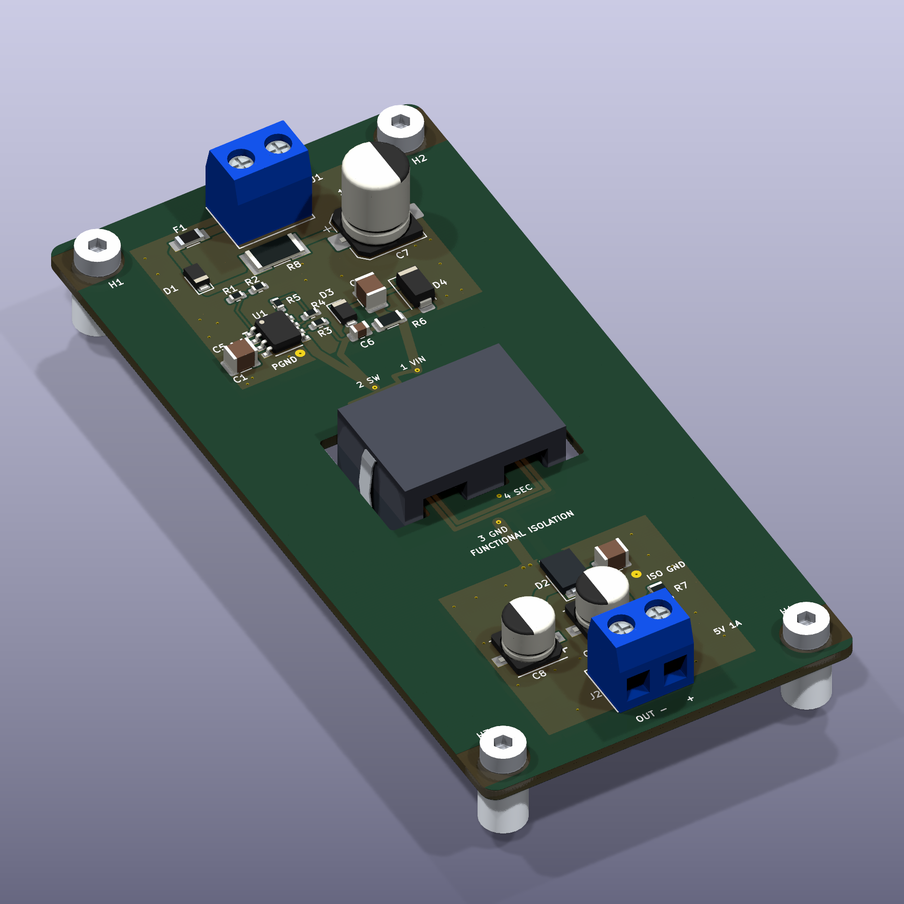
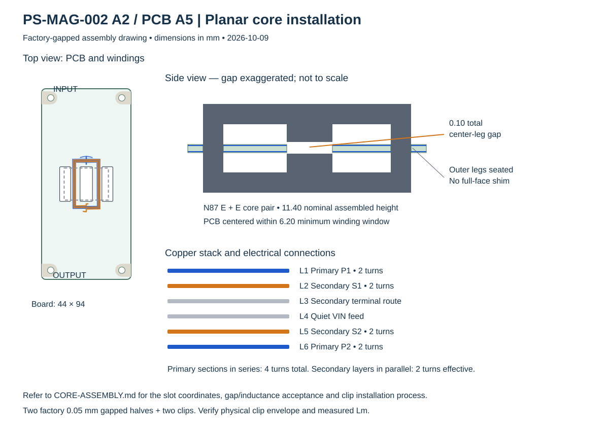
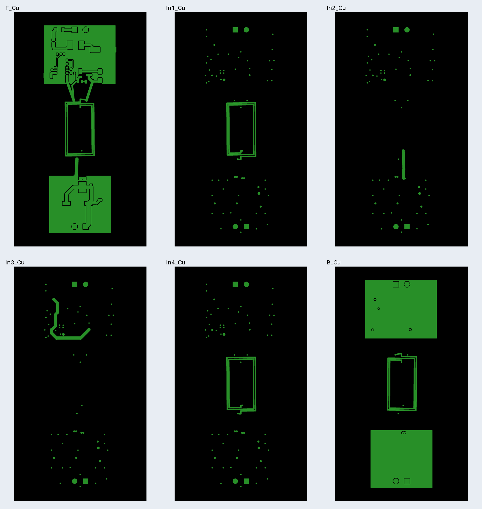

Factory-gapped cores.
Windings in the PCB.
Engineering prototype. CAD and analytical checks pass; physical clip fit, magnetic bias/thermal performance and factory order acceptance still require first-article verification.
18–36 V in · isolated 5 V / 1 A out
A2 uses two DigiKey-listed B66285G0050X187 N87 ELP22 halves, each factory-gapped 0.05 mm, and two B66286A2000X000 spring clips. No grinding or adhesive cure.
The 50 × 104 mm outline, six-layer stack and complete electronic BOM are retained. The smaller winding has 0.6 mm traces and 0.3 mm via drills.

Three complementary fit checks
Native board/copper rules; independent tolerance checks against the actual routed outline; and STEP solid intersections against the PCB and neighboring components. All 29 footprints have local visible models.
Maximum ferrite dimensions leave 0.146 mm at the tightest rounded corner after allowing 0.20 mm inward routing per wall and 0.05 mm centered insertion offset. A 1.78 mm board leaves 2.21 mm window clearance per face.
The public TDK drawing does not fully dimension the installed clip bow or recess. The model's clip details are illustrative; verify that actual clips stay within the reserved 1.5 mm outward envelope. The pair can float within its slots, so retention and vibration remain physical checks.
Electrical checks and limits
Accept measured assembled primary L only from 11.0 to 14.6 µH. The catalog AL is an estimate for the two-gap combination, not a purchased AL tolerance. Full-load stress sizing gives 2.06 A peak versus the 3.6 A minimum controller limit. At maximum accepted L, the 5.4 A flux screen is 0.253 T; typical 7.2 A restart excursions are 0.337 T and need bias/fault tests. The smaller core has less fault margin than A1.
| Input | Cycle peak | Frequency | Winding DC loss |
|---|---|---|---|
| 18 V | 1.70 A | 299 kHz | 0.312 W |
| 24 V | 1.53 A | 373 kHz | 0.249 W |
| 36 V | 1.51 A | 380 kHz | 0.219 W |
These are analytical power-stage calculations. The assumed 75% efficiency and the linear model do not validate core/fringing loss, nonlinear saturation, burst behavior or temperature. Measure switching/feedback-pin stress, startup, ripple and fault recovery before release.

Order and assemble
JLCPCB receives the six-layer single-board Gerber ZIP, electronic BOM and CPL. Use the named JLC061611-1080A stack, ENIG and selective filled/capped vias. Have JLCPCB prepare the panel and accept the component-compatible Standard-PCBA reflow profile. Five finished boards require ten core halves and ten clips before spares; procure these separately from DigiKey and install after depanelization.
The indexed US listings retrieved October 8 show both core and clip at MOQ 1. Inventory is unreserved. Factory DFM acceptance and actual clip/inductance checks remain required; no supplier submission or purchase has occurred.

Actual fabrication layers

Current machine-readable evidence is listed in VALIDATION.md. Historical A1 audit reports are retained as background and do not qualify A2.